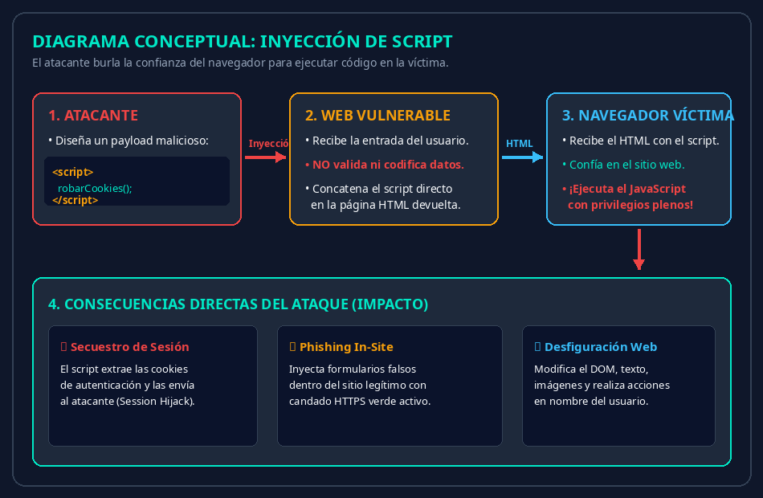
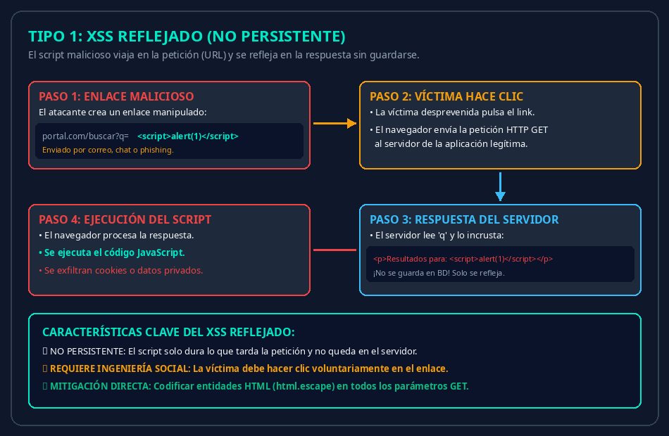
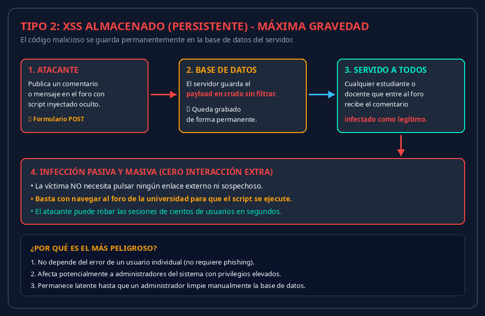
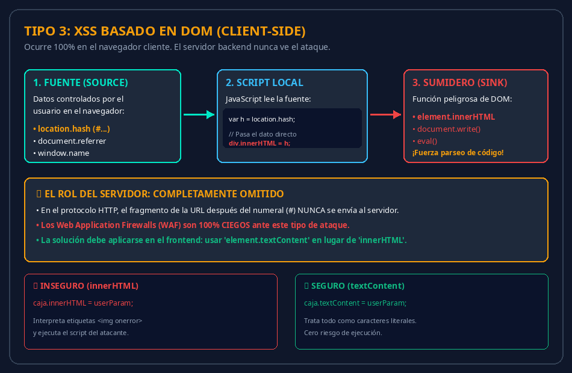
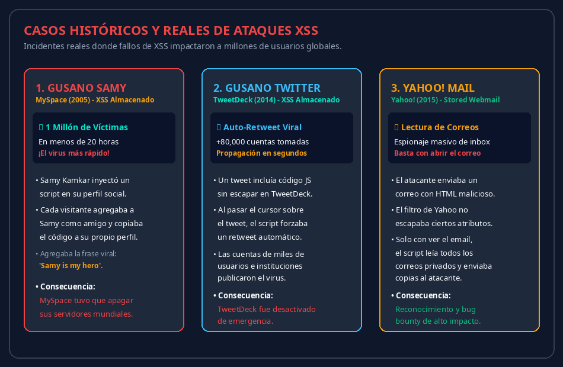
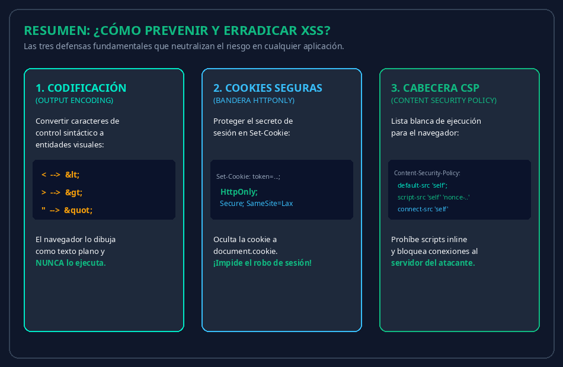

?q=script).
html.escape() para que los caracteres < y > se muestren como texto plano.


# en la URL con location.hash) y la escribe con funciones peligrosas como innerHTML.
innerHTML por textContent para insertar datos como texto literal seguro.


< en < y > en > para que el navegador los pinte como texto plano.
HttpOnly=True en las cookies de sesión para que JavaScript no pueda leerlas ni robar la sesión.
'unsafe-inline').

Notas...